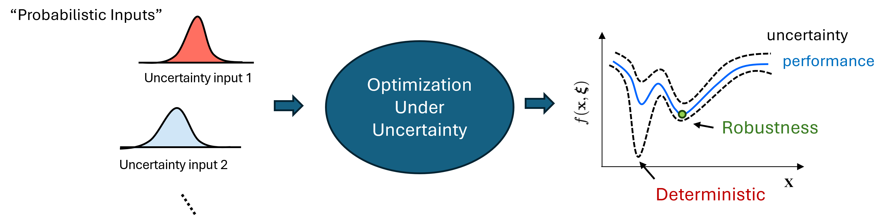

PyEGRO: Python for Efficient Global Robust Optimization¶
Overview¶
PyEGRO is a Python library designed for solving complex engineering problems with efficient global robust optimization. It provides tools for initial design sampling, metamodeling, sensitivity analysis, uncertainty quantification and robust optimization.
Key Modules¶
1. Design of Experiments¶
- Advanced sampling methods:
- Latin Hypercube Sampling (LHS)
- Sobol Sequence
- Halton Sequence
- Design variables and environmental variables (deterministic and stochastic).
- Multi-dimensional Input.
- Customizable sampling criteria for enhanced precision.
2. Metamodeling¶
-
Supports Gaussian Process Regression (GPR) or Kriging and Multi-Fidelity using Co-Kriging metamodel
-
Using Polynomial Chaos Expansion (PCE) in uncertainty quntification and support in robust optimization loop
-
Real-time progress visualization.
3. EGO for Metamodeling¶
Provides multiple acquisition functions:
- Expected Improvement (EI) and Boosting the Exploration term (𝜁-EI)
- Exploration Enhanced EI (E3I) [1]
- Expected Improvement for Global Fit (EIGF) [2]
- Distance-Enhanced Gradient (CRI3) [3]
Comprehensive training configurations for meta models and Built-in visualization and performance tracking.
4. Robust Optimization¶
- Support techniques: Monte Carlo Simulation (MCS) and Polynomial Chaos Expansion (PCE)
- Able to use Artificial Neural Network (ANN) in robust optimization loop call Two-Stage approach.
- Hyperparameter optimization using Optuna.
- Multi-objective Pareto solutions.
- Both direct function and surrogate-based evaluations supported.
5. Global Sensitivity Analysis¶
- Sobol' indices for quantifying sensitivity.
- Seamless analysis with true or surrogate functions.
- Built-in visualization tools for insightful results.
6. Uncertainty Quantification¶
- Monte Carlo Simulation methods for uncertainty propagation:
- Moment estimation.
- Distribution analysis (Kernel density function, KDF).
- Reliability and Risk Assessment
- Visualization of Mean and Confidence bounds on surrogate model (1D and 2D)
- Data logging in .csv for post-processing
👤 About the Author¶
Thanasak Wanglomklang
PhD Student in Mechanical Engineering
Hi, I’m Thanasak, a PhD student in Mechanical Engineering at École Centrale de Lyon, supervised by Sébastien Besset and Frédéric Gillot. My research focuses on optimization under uncertainty, and computational vibro-acoustics, with applications in aircraft cabin shape optimization for noise reduction. I’m developing PyEGRO, a tool to address these challenges in my research. In future, aiming to support uncertainty-aware engineering design.
- Email: thanasak.wanglomklang@ec-lyon.fr
- Personal Website: twanglom.github.io
👥 Community and Contributions¶
We welcome contributions to PyEGRO! Visit our GitHub repository to raise issues, submit pull requests, or explore the source code.
References¶
1. Berk, J., Nguyen, V., Gupta, S., Rana, S., & Venkatesh, S. (2019). Exploration enhanced expected improvement for Bayesian optimization. In Machine Learning and Knowledge Discovery in Databases: European Conference, ECML PKDD 2018, Dublin, Ireland, September 10–14, 2018, Proceedings, Part II 18 (pp. 621-637). Springer International Publishing.
2. Lam, C. Q. (2008). Sequential adaptive designs in computer experiments for response surface model fit (Doctoral dissertation, The Ohio State University).
3. Shimoyama, K., & Kawai, S. (2019). A kriging-based dynamic adaptive sampling method for uncertainty quantification. Transactions of the Japan Society for Aeronautical and Space Sciences, 62(3), 137-150.
License¶
---